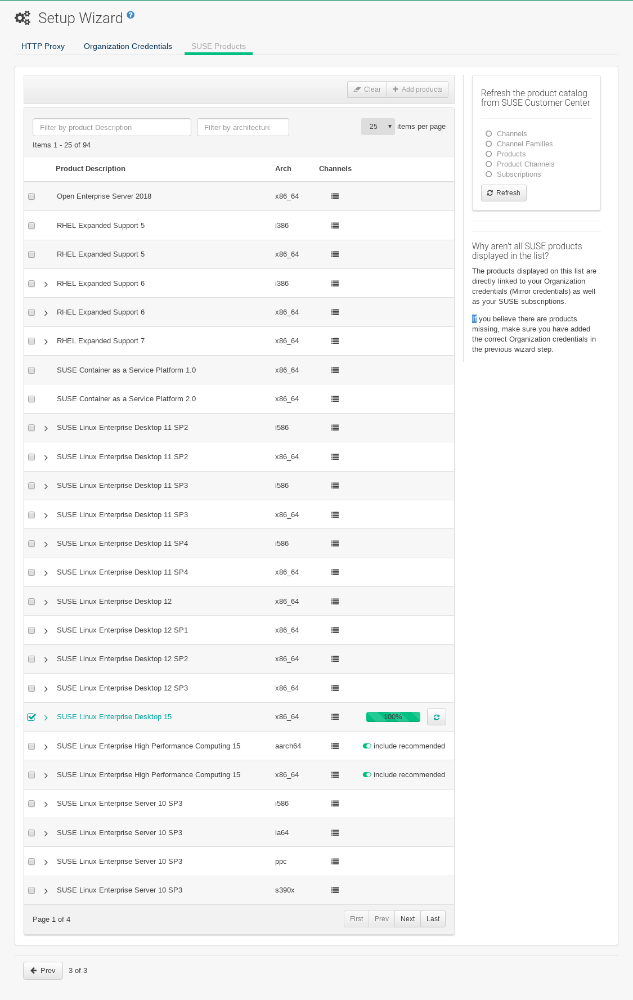

Uyuni 2026.01 Server Deployment
This guide shows you how to install and configure a Uyuni 2026.01 container on SL Micro 6.1 or SUSE Linux Enterprise Server 15 SP7.
1. Hardware Requirements for Uyuni
This table shows the software and hardware requirements for deploying Uyuni Server on your bare metal machine. For the purposes of this guide your machine should have 16 GB of RAM, and at least 200 GB of disk space. For background information about disk space, see Hardware Requirements.
| Software and Hardware | Recommended |
|---|---|
Operating System |
SL Micro 6.1 or SUSE Linux Enterprise Server 15 SP7 |
Architecture |
x86-64, ARM, s390x, ppc64le |
Processor (CPU) |
Minimum of four (4) 64-bit CPU cores |
RAM |
16 GB |
Disk Space |
200 GB |
Channel Requirements |
50 GB per SUSE or openSUSE product 360 GB per Red Hat product |
Swap space: |
8 to 12 GB |
|
Supported operating system for the Server Container Host
The supported operating system for the container host is SL Micro 6.1 or SUSE Linux Enterprise Server 15 SP7.
|
|
Server deployment mandates the use of a fully qualified domain name (FQDN). In the absence of automatic DNS provision of an FQDN by your router or network, the deployment process will not proceed successfully. An FQDN typically follows the format <host>.<domain>.com. For instance:
For more information, see the section on network requirements in Network Requirements. |
2. Persistent Volumes
Uyuni 2026.01 defines the required persistent storage volumes by default.
These are created during installation by the mgradm tool if they do not already exist.
These volumes are created in /var/lib/containers/storage/volumes/, where Podman stores its volumes by default.
|
Recommendations
You can leverage the simplicity of storage by mounting an external storage device to this directory. Because it will store the PostgreSQL database, binary packages for repositories, caches, operating system images, autoinstallation distributions, and configuration files, we have three recommendations:
|
For a list of all persistent volumes in the container, see Persistent Container Volumes.
3. Prepare Uyuni Server Host
You can deploy Uyuni on SL Micro 6.1 or SUSE Linux Enterprise Server 15 SP7. SL Micro is a transactional system, while SUSE Linux Enterprise Server is a full server operating system.
Depending on your decision, either continue with Prepare SL Micro 6.1 Host or with Prepare SUSE Linux Enterprise Server 15 SP7 host and skip the not selected section.
3.1. Prepare SL Micro 6.1 Host
3.1.1. Download the installation media
Locate the SL Micro 6.1 installation media at https://www.suse.com/download/sle-micro/, and download the appropriate media file.
Prepare a DVD or USB flash drive with the downloaded
.isoimage for installation.
3.1.2. Install SL Micro 6.1
For more information about preparing your machines (virtual or physical), see the SL Micro Deployment Guide.
Insert the DVD or USB flash drive (USB disk or key) containing the installation image for SLE Micro 6.1.
Boot or reboot your system.
Use the arrow keys to select
Installation.Adjust Keyboard and language.
Click the
checkboxto accept the license agreement.Click
Nextto continue.Select the registration method. For this example, we will register the server with SUSE Customer Center.
The Uyuni 2026.01 containers are installed as extensions. Depending on the specific extension needed from the list below, additional SUSE Customer Center registration codes will be required for each.
Uyuni 2026.01 Server
Uyuni 2026.01 Proxy
Uyuni 2026.01 Retail Branch Server
The SL Micro 6.1 entitlement is included within the Uyuni entitlement, so it does not require a separate registration code.
Enter your SUSE Customer Center email address.
Enter your registration code for SL Micro 6.1.
Click
Nextto continue.To install a proxy, select the Uyuni 2026.01 Proxy extension; to install a server, select the Uyuni 2026.01 Server extension
Checkbox.Click
Nextto continue.Enter your Uyuni 2026.01 extension registration code.
Click Next to continue.
On the
NTP Configurationpage click Next.On the
Authentication for the Systempage enter a password for the root user. Click Next.On the
Installation Settingspage click Install.
This concludes installation of SL Micro 6.1 and Uyuni 2026.01 as an extension.
3.1.3. OPTIONAL: Registration from the command line
If you added Uyuni 2026.01 as an extension during SL Micro 6.1 installation then you can skip this procedure. However, optionally you may skip registration during SL Micro 6.1 installation by selecting the Skip Registration button. This section provides steps on registering your products after SL Micro 6.1 installation.
|
The following steps register a Uyuni 2026.01 extension with the x86-64 architecture and thus require a registration code for the x86-64 architecture. To register ARM or s390x architectures use the correct registration code. |
List available extensions with the following command:
transactional-update --quiet register --list-extensionsFrom the list of available extensions, select the one you wish to install:
If installing the Server, use your Uyuni Server Extension 2026.01 x86_64 registration code with following command:
transactional-update register -p Multi-Linux-Manager-Server/5.1/x86_64 -r <reg_code>If installing the Proxy, use your Uyuni Proxy Extension 2026.01 x86_64 registration code with following command:
transactional-update register -p Multi-Linux-Manager-Proxy/5.1/x86_64 -r <reg_code>Reboot.
3.1.4. Update the system
Log in as root.
Run transactional-update:
transactional-updateReboot.
|
SL Micro is designed to update itself automatically by default and will reboot after applying updates. However, this behavior is not desirable for the Uyuni environment. To prevent automatic updates on your server, Uyuni disables the transactional-update timer during the bootstrap process. If you prefer the SL Micro default behavior, enable the timer by running the following command: |
To continue with deployment, see Configure Custom Persistent Storage.
3.2. Prepare SUSE Linux Enterprise Server 15 SP7 host
Alternatively, you can deploy Uyuni on SUSE Linux Enterprise Server 15 SP7.
The following procedures describe the main steps of the installation process.
3.2.1. Install Uyuni extensions on SUSE Linux Enterprise Server
Locate and download SUSE Linux Enterprise Server 15 SP7
.isoat https://www.suse.com/download/sles/.Make sure that you have regsistration codes both for the host operating system (SUSE Linux Enterprise Server 15 SP7) and extensions
Start the installation of SUSE Linux Enterprise Server 15 SP7.
On the
Language, keyboard and product selectionselect the product to install.On the
License agreementread the agreement and checkI Agree to the License Terms.Select the registration method. For this example, we will register the server with SUSE Customer Center.
Enter your SUSE Customer Center email address.
Enter your registration code for SUSE Linux Enterprise Server 15 SP7.
Click
Nextto continue.
Please note that for SUSE Linux Enterprise Server 15 SP7, you are required to have a valid SUSE Linux Enterprise Server subscription and corresponding registration code, which you must provide on this screen. You will be required to enter the Uyuni Extension registration code below.
In the screen
Extensions and Modules Selectioncheck the following:
Select the Uyuni Server Extension to install the Server, or the Uyuni Proxy Extension to install the Proxy.
Basesystem Module
Containers Module
Click
Nextto continue.Enter your Uyuni 2026.01 extension registration code.
Click Next to continue.
Complete the installation.
When the installation completes, log in to the newly installed server as root.
Update the System (optional, if the system was not set to download updates during install):
zypper upReboot.
3.2.2. OPTIONAL: Registration from the command line
If you added Uyuni 2026.01 as an extension during SUSE Linux Enterprise Server installation then you can skip this procedure.
However, optionally you may skip registration during SUSE Linux Enterprise Server installation by selecting the Skip Registration button. This section provides steps on registering your products after SUSE Linux Enterprise Server installation.
|
The following steps register a Uyuni 2026.01 extension with the x86-64 architecture and thus require a registration code for the x86-64 architecture. To register ARM or s390x architectures use the correct registration code. |
List available extensions with the following command:
SUSEConnect --list-extensionsFrom the list of available extensions, select the one you wish to install. If installing the Server, use your Uyuni Server Extension 2026.01 x86_64 registration code. For example for SUSE Linux Enterprise 15 SP7, use the following commands:
SUSEConnect -r <regcode> SUSEConnect -p sle-module-containers/15.7/x86_64 SUSEConnect -p Multi-Linux-Manager-Server-SLE/5.1/x86_64 -r <regcode>
If installing the Proxy, use your Uyuni Proxy Extension 2026.01 x86_64 registration code with the following command:
SUSEConnect -p Multi-Linux-Manager-Proxy-SLE/5.1/x86_64 -r <regcode>
3.2.3. Install and enable podman
podman
Log in as root and install the product package.
On the server:
zypper in podman zypper in -t product SUSE-Multi-Linux-Manager-ServerOn the proxies:
zypper in podman zypper in -t product SUSE-Multi-Linux-Manager-Proxy
Make sure that package
podmanis installed. Additionally, on the servermgradmandmgradm-bash-completionor on the proxies,mgrpxyandmgrpxy-bash-completionalso need to be installed.Start the Podman service by rebooting the system, or running a command:
systemctl enable --now podman.service
To continue with deployment, see Configure Custom Persistent Storage.
4. Configure Custom Persistent Storage
Configuring persistent storage is optional, but it is the only way to avoid serious trouble with container full disk conditions.
It is highly recommended to configure custom persistent storage with the mgr-storage-server tool.
For more information, see mgr-storage-server --help.
This tool simplifies creating the container storage and database volumes.
Use the command in the following manner:
mgr-storage-server <storage-disk-device> [<database-disk-device>]For example:
mgr-storage-server /dev/nvme1n1 /dev/nvme2n1
|
This command will create the persistent storage volumes at For more information, see |
5. Deploy Uyuni with mgradm
|
If you want to use third-party SSL certificates instead of the self-signed certificates, import them in the run of the following deployment procedure. For more information about the requirements of third-party SSL certificates, see Import SSL Certificates. |
|
Uyuni server hosts that are hardened for security may restrict execution of files from the For example: In Uyuni updates, tools will be changed to make this workaround unnecessary. |
mgradm-
Log in as root.
-
Deploy Uyuni.
If you use VM images as a migration target, here as the last step, execute the command
mgradm migrateinstead ofmgradm install.Execute one of the following commands, depending on the SSL certificate variant (self-signed or third-party). Replace
<FQDN>with your fully qualified domain name of the Uyuni Server:-
Using self-signed certificates provided by Uyuni:
mgradm install podman <FQDN> -
With importing SSL certificates using third-party SSL certificate flags (the example can adjusted if not all these certificates are needed):
mgradm install podman <FQDN> \ --ssl-ca-intermediate <strings> \ --ssl-ca-root <string> \ --ssl-server-cert <string> \ --ssl-server-key <string> \ --ssl-db-ca-intermediate <strings> \ --ssl-db-ca-root <string> \ --ssl-db-cert <string> \ --ssl-db-key <string>For more information, see
mgradm install podman --help.
If the executed command fails ensure that you have registered Uyuni 2026.01. If you skipped registration during installation and now need to register from the command line, follow the steps below to log in to the registry:
set +o history echo SCC_MIRRORING_PASSWORD | podman login -u "SCC_MIRRORING_USER" --password-stdin registry.suse.com set -o historyUse the Uyuni 2026.01 registration key when prompted.
-
-
Enter CA key (certificate authority) and administrator account password when prompted.
The administrator account password must be at least 5 characters and less than 48 characters in length.
-
Press Enter.
-
Enter the email address of the administration account. Press Enter.
-
Wait for deployment to complete.
-
Open a browser and proceed to your servers FQDN.
-
Enter your username (default is
admin) and the password you set during the deployment process.
In this guide you deployed Uyuni 2026.01 Server as a container. Proceed to the next section to add your organization credentials for syncing with SUSE Customer Center.
6. Connect Uyuni 2026.01 to SUSE Customer Center
This section covers synchronizing with SCC from the Web UI and adding your first client channel.
-
Open a browser and proceed to your servers FQDN.
-
Enter your username (default is
admin) and the password you set during the deployment process. -
In the Uyuni Web UI, select .
-
From the
Setup Wizardpage select the Organization Credentials tab. -
Click Add a new credential.
-
Point your browser to the SUSE Customer Center.
-
Select your organization from the left navigation.
-
Select the users tab from the top of the page then Organization Credentials.
-
Make a note of your Mirroring credentials.
-
Back in the Uyuni Web UI enter your
UsernameandPassword, and confirm with Save.
When the credentials are confirmed with a green check-mark icon, proceed with Procedure: Synchronizing with SUSE Customer Center.
-
In the Web UI, navigate to .
-
From the
Setup Wizardpage select theSUSE Productstab. If you recently registered with SUSE Customer Center a list of products will begin populating the table. This operation could take up to a few minutes. You can monitor the progress of the operation in section on the rightRefresh the product catalog from SUSE Customer Center. The table of products lists architecture, channels, and status information. For more information, see Wizard. -
Use the
Filter by product descriptionandFilter by architectureto filter the list of displayed products. The channels listed on the Products page provide repositories for clients.-
Add channels to Uyuni by selecting the check box to the left of each channel. Click the arrow symbol to the left of the description to unfold a product and list available modules.
-
Click Add Products at the top of the page to start product synchronization.
-
After adding the channel, Uyuni will schedule the channel to be synchronized.
This can take a long time as Uyuni will copy channel software sources from the SUSE repositories located at SUSE Customer Center to the local /var/lib/containers/storage/volumes/var-spacewalk/ directory of your server.
When the channel is fully synchronized, a bootstrap repository for it will be automatically generated. This step is crucial for successfully bootstrapping clients, ensuring that the channel synchronization and distribution are operational on the client side. This completes the installation and configuration of Uyuni, along with preparing the channels necessary for bootstrapping clients.
When the channel synchronization process is complete, you can proceed with registering the Uyuni 2026.01 Proxy or additional clients.
For more instructions, see Client Registration.
7. Entering the Container for Management
To get to a shell inside the container, run on the container host:
mgrctl term